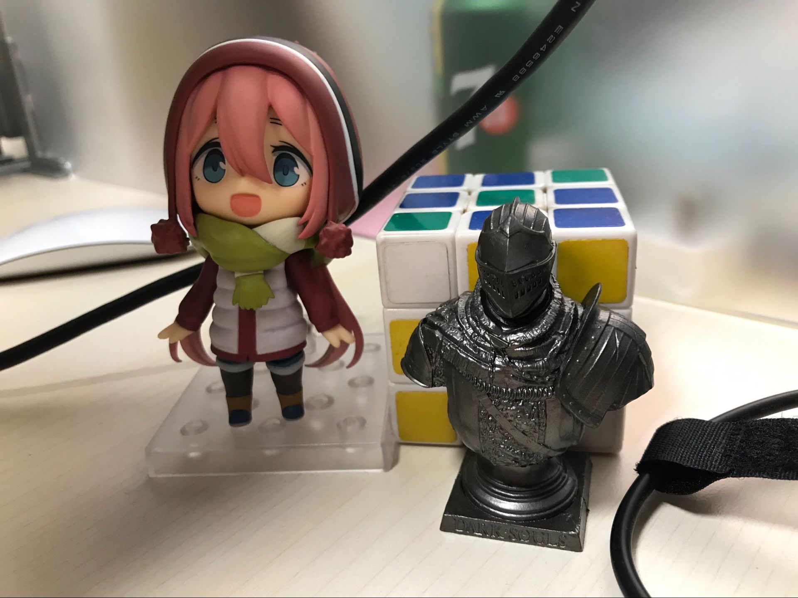

1.1. origin image. (only set the height)
1.2. scale and show all image
1.3. crop the image, scale with width shorter edge full with div
1.4. 1.3 with circle border

2.1. <img> origin
2.2. <img> scale show all image
2.3. <img> scale with width shorter edge full with div
2.4. <img> 2.3 with circle border